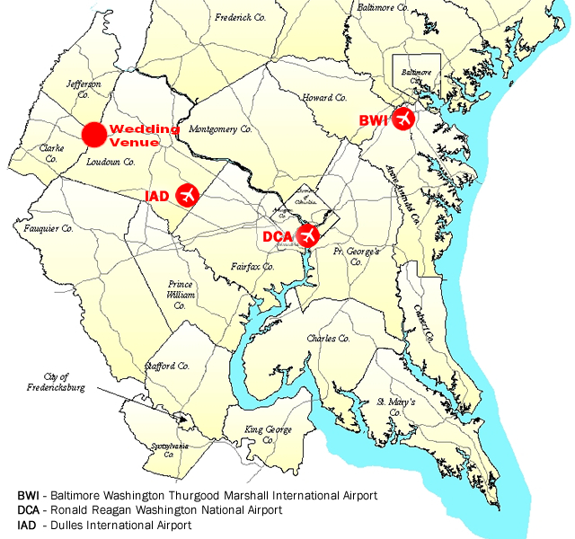
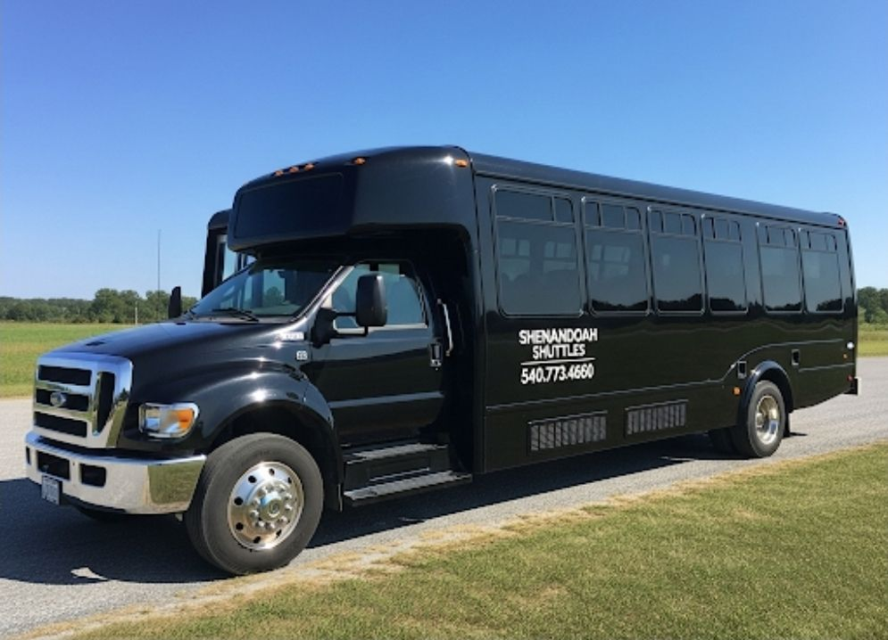

We Can’t Wait to Celebrate with You!
Below, you’ll find details about our venue, our hotel block, and useful details about transportation. The listed hotel are where we’ll be offering transportation
to and from the wedding venue. When you RSVP, please let us know if you’d like to use this transportation so we can plan accordingly.

Ceremony and Reception Venue
Shenandoah Lodge
Located 15 minutes north of Front Royal and in the Shenandoah Valley amongst the Blue Ridge Mountains, the wedding venue is located at the Shenandoah Lodge within the Lake Frederick community.
Address:
180 Bald Eagle Drive
Lake Frederick, VA 22630
Wedding Hotel
DoubleTree Front Royal Blue Ridge Shadows
The hotel is located about 10 minutes south of the wedding venue and has a restaurant, indoor pool/hot tub, and views of the Blue Ridge Mountains.
Address:
111 Hospitality Drive
Front Royal, VA 22630
Reservation Link:
https://group.doubletree.com/8sil9l

Travel By Car
From Washington, D.C., the drive takes about 1 hour 30 minutes, depending on traffic.
Ample parking is available directly outside the venue.
Travel by Air
The two closest major airports are:
Both airports offer a variety of rental car and rideshare options.

Travel By Bus
If you'd rather not drive, one bus lines offer regular service to Front Royal from both Union Station (D.C.'s train station) and Dulles Airport (IAD):
📍 Note: The Front Royal stop drops off at the Walmart parking lot at Riverton Commons Shopping Center (about 6 miles from the venue and 2 miles from the hotel).
🎟️ Bus tickets typically range from $21–$32, and can be booked via https://us.megabus.com/.
Travel by Train
If you're coming from the Northeast or Mid-Atlantic, Amtrak and MARC offer convenient service into Union Station in Washington, D.C. From there, you can rent a car,
use a rideshare, or hop on the bus services above to reach the Front Royal area.
Train tickets can be booked via https://www.amtrak.com/.

Day-of Transportation
To make things easy for our guests, we will be providing transportation to and from the wedding hotel and the wedding ceremony/reception on the day of the wedding.
Shuttles will depart from the wedding hotel and return in the evening.
We’ll share the exact shuttle schedule closer to the wedding date, but please plan to be at the hotel lobby around 3 PM for a ride to the venue. If you prefer to
drive, parking is also available on-site at the venue.